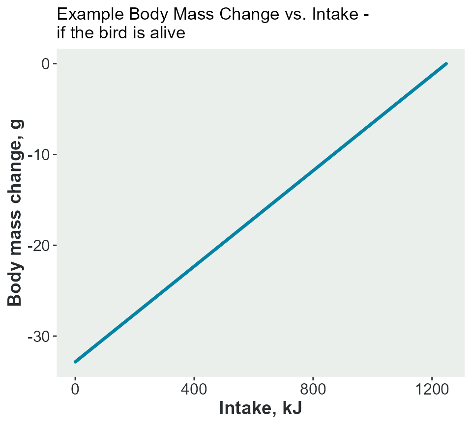
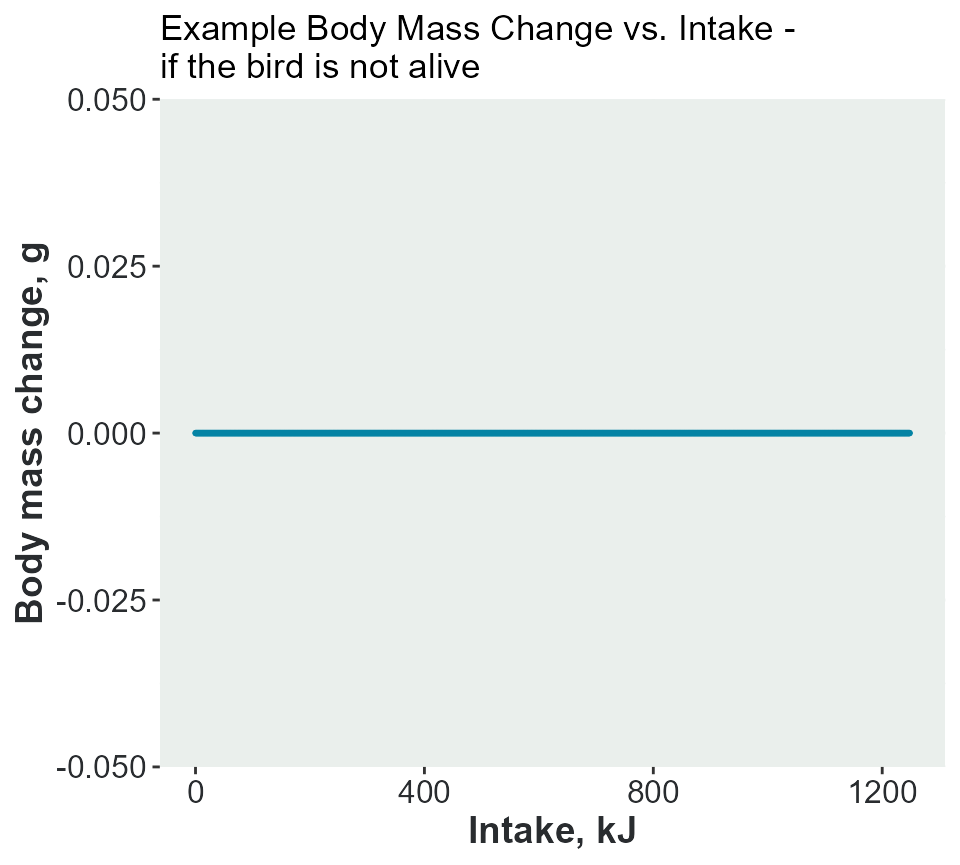

Main functions behind seabORD
F_main_functions.RmdBody mass increase for adult birds
(calc_adultbmchage)
Function description
All adult birds update their body mass at the end of each day based on the energy they gain and expend foraging and in other activities. The model we use is an expanded version of that used in Daunt & Wanless (2008) and Wanless et al. (1997) (Daunt et al., 2008); Wanless et al. (1997)], which separates flight cost and foraging cost for each adult to derive total energy expenditure.
where is the revised body mass, is the starting body mass (in g), is the energy available from food (in kJ), is the energy requirement (in kJ) and is the energy density of the adult bird tissue (kJ per gram).
Input parameters
- alive A flag, 0 or 1, indicating if the bird is alive during the timestep
- BM_adult The current body mass
- Egain_adult The energy acquired from food for this adult (chick food has been subtracted) for this timestep
- Ereq_adult The energy that was required for this timestep (based on previous timestep activity)
- adult_edensity Energy density of the adult bird tissue, kJ per gram
The function
calc_adultbmchange <- function(alive, BM_adult, Egain_adult, Ereq_adult,
adult_mass_KG){
if (alive){
BM_adult <- BM_adult + ((Egain_adult - Ereq_adult)/adult_mass_KG)
}
return(BM_adult)
}Practical examples
Example 1 - the bird is alive
In the model, the energy from food, Egain_adult, will
never exceed the daily requirement, Ereq_adult, as they
stop foraging as soon as the goal is reached. This means that the adults
birds can only lose body mass, not gain.
In this example, a single bird with a body mass of 380g and a Energy density of the adult bird tissue of 38 kJ/g. Calculation of the change in body mass if it has an intake between 0 and its full requirement of 1248 kJ.
BM_adult <- 380
Ereq_adult <- 1248 #kJ
adult_mass_KG <- 38
Egain_adult <- c(0:Ereq_adult)
bodymass <-
calc_adultbmchange(alive = TRUE, #it's alive
BM_adult = BM_adult, #g
Egain_adult = Egain_adult, #kJ
Ereq_adult = Ereq_adult, #kJ
adult_mass_KG = adult_mass_KG) #kJ per gThe plot shows the change in body mass with an intake. The bird would lose 30g if it had no food.

Example 2 - the bird is not alive
If the bird is not alive, , the body mass will remain unchanged.
bodymass_2 <-
calc_adultbmchange(alive = FALSE, #it's alive
BM_adult = BM_adult, #g
Egain_adult = Egain_adult, #kJ
Ereq_adult = Ereq_adult, #kJ
adult_mass_KG = adult_mass_KG) #kJ per gThe plot shows there is no change in body mass.

Calculate Daily Energy Requirement
(calc_adultdee)
Function description
This function calculates the energy expenditure timestep t for adult birds, based on the activities carried out. This value is assumed to be the energy requirement for the following time step, t+1. DEE is the sum of proportion of total deployment time spent on each of these activities multiplied by activity-specific energetic costs available from the literature ((Pennycuick, 1989); Croll & McLaren (1993); Hilton et al. (2000); Enstipp et al. (2006); respective costs: 1168.91 kJ day-1; 7361.72kJ day-1; 810.28 kJ day-1; 1894.90 kJ day-1) and the cost of warming food (Grémillet et al., 2003).
Input parameters
- alive Is the bird dead or alive? 0,1
- colony_h Time spent at the colony, hours
- flying_h Time spent flying, hours
- foraging_h Time spent foraging, hours
- at_sea_h Time spent resting at sea, hours
- energy_nest Energy cost of nesting at colony, kJ per day
- energy_flight Energy cost of flight, kJ per day
- energy_forage Energy cost of foraging, kJ per day
- energy_searest Energy cost of resting at sea, kJ per day
- energy_warming Energy cost of warming food, kJ per day
- assim_eff Assimilation efficiency
- daylength Length of this species’ time step, hours
The function
the function will calculate the adult DEE as follows:
Energy spent on nesting:
Energy spent on flying:
Energy spent on foraging:
Energy spent at sea:
Energy spent on warming:
calc_adultdee <- function(alive, colony_h, flying_h, foraging_h, at_sea_h,
energy_nest, energy_flight, energy_forage,
energy_searest, energy_warming, assim_eff,
daylength){
if (alive){
adult_DEE <-
(energy_nest * colony_h/daylength) +
(energy_flight * flying_h/daylength) +
(energy_forage * foraging_h/daylength) +
(energy_searest * at_sea_h/daylength) +
(energy_warming * daylength/24.0)
Ereq_adult <- adult_DEE / assim_eff
} else {
Ereq_adult <- 0
}
return(Ereq_adult)
}Practical examples
Example 1 - the bird is alive
Ereq_adult <- calc_adultdee(
alive = TRUE, #bird alive
colony_h = 12,
flying_h = 5,
foraging_h = 6,
at_sea_h = 1,
energy_nest = 427.75,
energy_flight = 1400.74,
energy_forage = 1400.74,
energy_searest = 400.57,
energy_warming = 34.15,
assim_eff = 0.74,
daylength = 36
)
print(Ereq_adult)
#> [1] 855.3232Example 2 - the bird is not alive
The output is 0 kcal, as the bird is dead.
Ereq_adult <- calc_adultdee(
alive = FALSE, #bird not alive
colony_h = 12,
flying_h = 5,
foraging_h = 6,
at_sea_h = 1,
energy_nest = 427.75,
energy_flight = 1400.74,
energy_forage = 1400.74,
energy_searest = 400.57,
energy_warming = 34.15,
assim_eff = 0.74,
daylength = 36
)
print(Ereq_adult)
#> [1] 0Probability of winter survival
(calc_pSurvival)
Function description
Calculate the probability of survival over the whole year based on the body mass of the individual relative to the population mean, species expected survival and parameters. Baseline survival values may apply to poor, moderate or good years.
Input parameters
- sp The species two-letter code
- bmi Body mass for the individual adult bird (g)
- bm Body mass of the adult birds alive at the end of the breeding season, mean (g)
- sd Body mass of the adult birds alive at the end of the breeding season, standard deviation
- basesurv Baseline survival
- beta Mass-survival slope
The function
logit <- function(x) {xx = log(x/(1-x))}
ilogit <- function(y) {yy = exp(y)/(1+exp(y))}
calc_pSurvival <- function (sp, bmi, bm, basesurv, beta, sd = 0) {
if (bmi == 0 | is.na(bmi)){ # The bird didn't survive breeding season
out <- 0
} else { # Calculate survival over winter
if (sp == "KI") {
out <- ilogit(logit(basesurv) + ((bmi - bm)*beta))
} else {
out <- ilogit(logit(basesurv) + ((bmi - bm)/sd)*beta)
}
}
}Practical examples
Example 1 - kittiwake
p <- calc_pSurvival(sp = "KI",
bmi = 345.9,
bm= 370.8,
basesurv= 0.8,
beta = 0.038
) #sd non-specified, so 0
print(p)
#> [1] 0.6082815Example 2 - guillemot
p2 <- calc_pSurvival(sp = "GU",
bmi = 345.9,
bm = 370.8,
basesurv = 0.92,
beta = 1.03,
sd = 50)
print(p2)
#> [1] 0.8731838Puffin chick mortality from predation due to hunger
(calc_puffinmortality)
Function description
If a puffin chick is hungry, there is an increased risk of predation. This function takes the ‘hungry’ chicks (based on relative body condition), calculates the probability of death by predation and then uses rbinom to remove some of those chicks.
Input parameters
- CoD Cause of death
- alive Flag to indicate if the chick is currently alive (1) or dead (0)
- BM_condition Body mass relative condition, 0-1
- BM_Chick_mortf Critical mass below which chick is dead, 0-1
The function
calc_puffinmortality <- function(CoD, alive, BM_condition, BM_Chick_mortf){
if (alive) {
BM_Chick_hungry <- 0.7
hungry <- ifelse(BM_condition < 0.7, 1, 0)
Prob_death <- min((BM_Chick_hungry - BM_condition)/
(BM_Chick_hungry - BM_Chick_mortf), 1.0)
Prob_death <- hungry * Prob_death
unlucky <- stats::rbinom(n = 1, size = 1, Prob_death)
if (unlucky==1) {CoD <- "killed"}
}
return(CoD)
}Practical examples
Example 1 - puffin is alive and is not hungry
If the puffin is alive (CoD = “none”) and not hungry (BM_condition >= 0.7); then it stays alive and there is no change in the CoD.
new_CoD <- calc_puffinmortality(CoD = "none", #alive
alive = 1, #alive
BM_condition = 0.8, #not hungry
BM_Chick_mortf = 0.3)
print(new_CoD)
#> [1] "none"Example 2 - puffin is alive and hungry
There are 2 possibilities either it stays alive (no change in cause of death) or it does (cod changes to “killed”.
#ensure reproducibility
set.seed(123)
#it doesn't die (unvaried cod)
new_CoD <- calc_puffinmortality(CoD = "none", #alive
alive = 1, #alive
BM_condition = 0.5, #hungry
BM_Chick_mortf = 0.3)
print(new_CoD)
#> [1] "none"
#ensure reproducibility
set.seed(456)
#it dies (unvaried cod)
new_CoD <- calc_puffinmortality(CoD = "none", #alive
alive = 1, #alive
BM_condition = 0.4, #hungry
BM_Chick_mortf = 0.3)
print(new_CoD)
#> [1] "killed"Example 3 - puffin is not alive
If the puffin is not alive to begin with; the cause of death remains unvaried.
new_CoD <- calc_puffinmortality(CoD = "starved", #already dead
alive = 0, #dead
BM_condition = 0.5,
BM_Chick_mortf = 0.3)
print(new_CoD)
#> [1] "starved"Chick mortality as a result of other causes
(calc_othermortality)
Function description
Chicks can be lost from other causes such as flooding, storms etc. This function calculates the probability of death and then uses rbinom to remove some chicks according to that probability.
Input parameters
- CoD Cause of death
- alive Flag to indicate if the chick is currently alive (1) or dead (0)
- seasonlength Species parameter, number of timesteps in the breeding season
Practical examples
Example 1 - chick is alive
On 1000 repetatitions, sometimes it causes death (cod becomes “other”); sometimes it doesn’t.
#ensure reproducibility
set.seed(789)
new_CoD <- replicate(1000,#repeat the function to get a few cases where it dies
calc_othermortality(CoD = "none", #alive
alive = 1, #alive
seasonlength = 30)
)
print(table(new_CoD))
#> new_CoD
#> none other
#> 999 1Example 2 - chick is not alive
new_CoD <- calc_othermortality(CoD = "starved", #dead
alive = 0, #dead
seasonlength = 30)
print(new_CoD)
#> [1] "starved"Chick mortality as a result of adults not attending the nest
(calc_unattendmortality)
Function description
If a chick is left alone at the nest, there is an increased risk of death from predation etc. This function takes the chicks who are not fully attended by the adults, calculates the probability of death and then uses rbinom to remove some of those chicks.
Input parameters
- CoD Cause of death
- alive Flag to indicate if the chick is currently alive (1) or dead (0)
- unattend_hrs Number of hrs the chick was left unattended
- max_hrs Species parameter: Critical time threshold for unattendance at nest above which a chick is assumed to die through exposure or predation
Practical examples
Example 1 - chick is alive, with no unattended hours
The chick remains alive.
new_CoD <- calc_unattendmortality(CoD = "none", #alive
alive = 1, #alive
unattend_hrs = 0, #no attended hours
max_hrs = 12)
print(new_CoD)
#> [1] "none"Example 2 - chick is alive, some unattended hours
Low probability, unlikely to die. On 1000 runs. Depends on random draw
new_CoD <- replicate(1000,#repeat the function to get a few cases where it causes death
calc_unattendmortality(CoD = "none", #alive
alive = 1, #alive
unattend_hrs = 6,
max_hrs = 12)
)
print(table(new_CoD))
#> new_CoD
#> none unattended
#> 487 513Example 3 - chick is alive, unattended hours == to critical threshold
chick dies unattended.
new_CoD <- calc_unattendmortality(CoD = "none", #alive
alive = 1, #alive
unattend_hrs = 12,
max_hrs = 12)
print(new_CoD)
#> [1] "unattended"Example 4 - chick is alive, unattended hours > critical threshold
chick dies unattended.
new_CoD <- calc_unattendmortality(CoD = "none",
alive = 1,
unattend_hrs = 18,
max_hrs = 12)
print(new_CoD)
#> [1] "unattended"Example 5 - chick is dead
remains dead of the same causes.
new_CoD <- calc_unattendmortality(CoD = "starved", #dead
alive = 0, #dead
unattend_hrs = 18, #irrelevant
max_hrs = 12) #irrelevant
print(new_CoD)
#> [1] "starved"Parenting the chicks
(calc_chickcare)
Function description
For each chick, get the food provided by each of the parent birds and increase the chick body mass. Compare with the ‘optimum chick’ to estimate relative body condition and update the chick state. Add up the total hours of attendance for the timestep.
Input parameters
- parent A tibble containing the required variables from the adult birds (BirdID, PairID, feeding_mode, Ereq_intakef_c, colony_h, MF).
- ChickState List holding the current state of all the chicks and metadata.
- Opt_BM_chick The optimum body mass for the chick at this stage of the season (a chick that has received full requirements every day).
- Species List holding the species-specific variables (uses daylength, BM_Chick_mortf and chick_mass_a)
The function
calc_chickcare <- function(parent, ChickState, Opt_BM_chick, Species){
# Feed only live chicks!
if (1 %in% ChickState$data$is_chick_alive) {
ChickState$data <- ChickState$data %>% split(.$is_chick_alive)
# Join the male parent contribution
parentM <- dplyr::filter(parent, MF == "M")
ChickState$data$`1` <- ChickState$data$`1` %>%
dplyr::left_join(parentM, by = "PairID") %>%
dplyr::rename(feeding_mode_M = feeding_mode) %>%
dplyr::rename(Ereq_intakef_c_M = Ereq_intakef_c) %>%
dplyr::rename(colony_h_M = colony_h) %>%
dplyr::select(-c(MF, BirdID))
# Join the female parent contribution
parentF <- dplyr::filter(parent, MF == "F")
ChickState$data$`1` <- ChickState$data$`1` %>%
dplyr::left_join(parentF, by = "PairID") %>%
dplyr::rename(feeding_mode_F = feeding_mode) %>%
dplyr::rename(Ereq_intakef_c_F = Ereq_intakef_c) %>%
dplyr::rename(colony_h_F = colony_h) %>%
dplyr::select(-c(MF, BirdID))
# Tot up the attendance
ChickState$data$`1` <- ChickState$data$`1` %>%
dplyr::mutate(parenting_hrs = colony_h_M + colony_h_F) %>%
dplyr::mutate(unattend_hrs = purrr::pmap_dbl(
list(parenting_hrs, Species$data$daylength, 0.0),
~ ifelse({..1} < {..2}, {..2} - {..1}, {..3}))) %>%
dplyr::select(-c("parenting_hrs")) %>%
dplyr::select(!starts_with(c("colony")))
# Total food received and increase in body mass
ChickState$data$`1` <- ChickState$data$`1` %>%
dplyr::mutate(X = 0.5 * (Ereq_intakef_c_M + Ereq_intakef_c_F)) %>%
dplyr::mutate(BM_increase = (Species$data$chick_mass_a*(X-0.6))/0.4) %>%
dplyr::mutate(BM_chick = BM_chick + BM_increase) %>%
dplyr::mutate(BM_condition = BM_chick/Opt_BM_chick) %>%
dplyr::select(!ends_with(c("c_F","c_M"))) %>%
dplyr::select(-c("X", "BM_increase"))
# Update the chick modes
ChickState$data$`1` <- ChickState$data$`1` %>%
dplyr::mutate(f = "none") %>%
dplyr::mutate(f = purrr::pmap_chr(
list(BM_condition, Species$data$BM_Chick_mortf, f),
~ ifelse({..1}<{..2}, "starved", {..3}))) %>%
dplyr::mutate(f = purrr::pmap_chr(
list(feeding_mode_M, feeding_mode_F, f),
~ ifelse(({..1}==3 | {..2}==3), "abandoned", {..3}))) %>%
dplyr::mutate(f = purrr::pmap_chr(
list(feeding_mode_M, feeding_mode_F, f),
~ ifelse(({..1}==4 | {..2}==4), "parentdead", {..3})))
if (length(unique(ChickState$data$`1`$f)) > 1) {
ChickState$data$`1` <- ChickState$data$`1` %>% split(.$f=="none")
ChickState$data$`1`$`FALSE` <- ChickState$data$`1`$`FALSE` %>%
dplyr::mutate(CoD = f) %>%
dplyr::mutate(is_chick_alive = 0) %>%
dplyr::mutate(BM_chick = NA) %>%
dplyr::mutate(BM_condition = NA) %>%
dplyr::mutate(Ereq_chick = NA) %>%
dplyr::mutate(unattend_hrs = NA)
ChickState$data$`1` <- bind_rows(ChickState$data$`1`$`TRUE`, ChickState$data$`1`$`FALSE`)
}
ChickState$data$`1` <- ChickState$data$`1` %>%
dplyr::select(!starts_with(c("feeding_mode"))) %>%
dplyr::select(-c("f"))
# Reconstruct full tibble
ChickState$data <- bind_rows(ChickState$data$`1`, ChickState$data$`0`)
# > Update the metadata to reflect newly added variables to the ChickState tibble
newmeta <- tidyr::tribble(
~VarName, ~VarDescription, ~VarUnits,
"unattend_hrs", "Maximum length of time that the chick is not attended by either parent", "hours")
ChickState$metadata <- bind_rows(ChickState$metadata, newmeta) %>%
dplyr::filter(VarName %in% unique(names(ChickState$data)))
}
return(ChickState)
} # END calc_chickcareCalculate the time taken to forage required amount
calc_foragecapture
Function description
Given the starting prey density and the competition for food, we need to estimate how long it would take a bird to gather the food it needs.
We assume that the relationship between prey quantity x
and intake rate (-dx/dt) is of the form
dx/dt = -ax/(h+x) for parameters a and
h, the widely-used Michaelis-Menten model. This implies
that the prey quantity at time t is equal to
x(t,x_0) = {x:(x-x_0+at+hlog(x)-h log(x_0)) = 0}
where x_0 denotes the prey quantity at time 0. This in
turn implies that the total prey consumed by foraging up to time t is
equal to
y(t,x_0) = x_0 - x(t,x_0)
The solution to this cannot be written down analytically, but it can
be calculated numerically e.g. using a non-linear solver. This
function uses the solver, nleqslv, to create a
look-up table for a given x_0, a and
h for a range of values of t.
Input parameters
- x0 Prey quantity at time 0, g
- a Species maximum intake rate, kg/min
- h Species IR_half (modified to account for neighbours), kg/km2
- maxt The maximum number of minutes available
The function
calc_foragecapture <- function(x0, h, a, maxt){
# The function to solve
fn <- function(x, x0, a, t, h) {
if (x > 0) {
x - x0 + a*t + h*log(x) - h*log(x0)
} else {
10^10
}
}
# Make a blank look-up 'table' (vector)
captured <- rep(0, maxt)
# From 1 minute, calculate the food captured until it is all gone or we run
# out of time for the full timestep,
t <- 1
while (captured[t] < x0 & t <= maxt) {
# Find a solution
sol <- nleqslv::nleqslv(x0, fn=fn, jac=NULL, x0 = x0, a = a, t = t, h = h)
# Action depending on the returned code
if (sol$termcd < 3) {
captured[t] <- x0 - sol$x
} else {
captured[t] <- x0
}
t <- t + 1
}
# If all the prey has been captured before maxt, just fill in the rest
if (t < maxt) captured[-seq_len(t)] <- x0
# Return the look-up
tibble::tibble(tmin = seq_len(maxt), captured_g = captured)
}Practical examples
Example 1
x0 <- 201
h <- 700
a <- 2
maxt <- 2160
out <- calc_foragecapture(x0, h, a, maxt)
plot(out$tmin, out$captured_g)Example 2
x0 <- 201
h <- 977
a <- 4.37
maxt <- 2160
out <- calc_foragecapture(x0, h, a, maxt)
plot(out$tmin, out$captured_g)